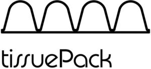

Trade Mark Journal No.2025/029 18 July 2025
WO0000001862574 (7,16,20)
Office of origin: Italy
Date of International Registration:23 January 2025
Date of designation in the UK:
23 January 2025

The trademark consists of an imprint depicting the wording TISSUEPACK in fancy characters above which is arranged a continuous undulating line resting on a horizontal line.
International priority date claimed: 6 November 2024
(Italy)
(302024000164256)
- Class 7
- Machines for manufacturing and dispensing packaging materials; machines for manufacturing packaging materials; machines for filling packaging containers; cartoning machines; machines for making corrugated cardboard; packaging machines; wrapping machines for packaging; stretch-wrapping machines for applying plastic materials to palletised loads; stretch-wrapping machines for applying cling film to palletised loads; rollers being components of wrapping lines [machines]; wrapping apparatus [machines]; processing machines for wrapping; machine tools, power-operated tools; motors and engines, except for land vehicles; machine coupling and transmission components, except for land vehicles; agricultural implements, other than hand-operated hand tools; incubators for eggs; automatic vending machines.
- Class 16
- Packaging of paper or cardboard; packaging of absorbent paper or cardboard; industrial paper and cardboard; paper and cardboard for packaging; absorbent paper and cardboard for packaging; packaging materials; wrapping paper; packaging materials of paper; packaging materials of absorbent paper; blotting paper; absorbent sheets of paper or plastic for packaging; packaging materials of cardboard; packaging materials of absorbent cardboard; printed packaging materials of paper or cardboard; cardboard packaging boxes in made-up form; corrugated cardboard; corrugated cardboard boxes; millboard; airtight packaging of cardboard; shipping containers of cardboard; industrial packaging containers of paper or cardboard; cushioning or padding made of paper for packing purposes; packing [cushioning, stuffing] materials of paper or cardboard; bottle wrappers of paper or cardboard; packaging materials made from mineral-based paper substitutes; paperboard trays for packaging food; industrial packaging containers of paper; packaging containers of regenerated cellulose; bags [envelopes, pouches] of paper, for packaging; wrapping, packaging and storage bags and articles made of paper or cardboard; bottle envelopes of paper or cardboard; paperboard blanks; placards of paper or cardboard; works of art and figurines made of paper and cardboard, and architects' models; figures made of paper; 3D wall art made of paper; wall decorations of paper; tablemats of paper or cardboard; table place setting mats of paper or cardboard; decorative centerpieces of paper or cardboard; placemats of paper or cardboard; coasters of paper or cardboard; decorations of cardboard for foodstuffs; drawer liners of paper, perfumed or not; trash bags of paper; garbage bags of paper; paper and cardboard; printed matter; bookbinding material; photographs; stationery and office requisites, except furniture; adhesives for stationery or household purposes; drawing materials and materials for artists; paintbrushes; instructional and teaching materials; plastic sheets, films and bags for wrapping and packaging; printers' type, printing blocks.
- Class 20
- Loading pallets, not of metal; crates and pallets, non-metallic; industrial packaging containers of wood; packaging containers of plastic; packaging containers of wood; camping mattresses; mats for infant playpens; sleeping pads; sink liners; footstools; storage drawers [furniture]; picture frames of paper or cardboard; shelves of paper and cardboard; occasional tables; occasional tables of paper and cardboard; decorative tables; decorative tables of paper and cardboard; display stands for merchandise of paper or cardboard; storage baskets [furniture]; non-metallic containers in the form of bins; furniture, mirrors, picture frames; containers, not of metal, for storage or transport; unworked or semi-worked bone, horn, whalebone or mother-of-pearl; shells; meerschaum; yellow amber.
GRIFAL S.P.A.
Representative: Dr. Modiano & Associati SpA, Via Meravigli 16, I-20123 Milano, ITALY